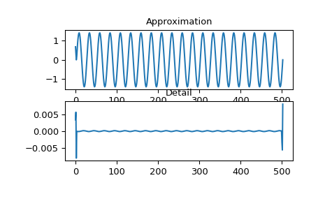
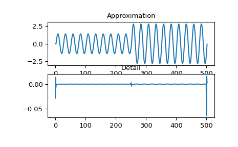
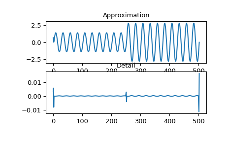

Wavelet Transform (PYWT Module) Functions#
|
Evaluate Discrete Wavelet Transform using scientifc package NumPy for convolution. |
|
Evaluate Discrete Wavelet Transform using PYWT package. |
|
Function to evaluate Discrete Wavelet Transform on a dataset in csv file format. |
|
Evaluate Discrete Wavelet Transform using scientifc package NumPy for convolution. |
Lists available continuous wavelets functions |
|
Lists available discrete wavelets functions |
|
|
Plot wavelets function for a given wavelet function |
Lists available wavelets functions |
- functions.TW.TW_PYWT.dwt_from_csv(csv_path, wavelet_name, level=1)#
Function to evaluate Discrete Wavelet Transform on a dataset in csv file format.
- Parameters:
- csv_pathstr
path to dataset csv file with three-phase signals, with tension and current data, on your computer
- wavelet_namestr
name of mother wavelet
- levelint, optional
level of decomposition (default=1)
- Returns:
- wavelet_dataframeDataFrame
DataFrame with wavelet coefficients of the dataset
Examples
>>> import functions.TW as TW >>> wavelet_dataframe = TW.TW_PYWT.dwt_from_csv("dataset.csv", 'db4')
- functions.TW.TW_PYWT.dwt_from_signal_generator(signal_data, wavelet_name, level=1, save_to_csv=True)#
Evaluate Discrete Wavelet Transform using scientifc package NumPy for convolution.
- Parameters:
- signal_datadict
dictionary with three-phase signal to perform transform
- wavelet_namestr
name of mother wavelet
- levelint, optional
level of decomposition (default=1)
- save_to_csvbool, optional
save the wavelet coefficients in a csv file (default=True)
- Returns:
- wavelet_dataframeDataFrame
DataFrame with wavelet coefficients for each phase signal
Examples
>>> import functions.TW as TW >>> import numpy as np >>> import matplotlib.pyplot as plt >>> signal_data = { ... "A": np.sin(2*np.pi*60*np.linspace(0, 20/60, 1000)), ... "B": np.sin(2*np.pi*60*np.linspace(0, 20/60, 1000)), ... "C": np.sin(2*np.pi*60*np.linspace(0, 20/60, 1000)) ... } >>> wavelet_dataframe = TW.TW_PYWT.dwt_from_signal_generator(signal_data, 'db4') >>> plt.subplot(2, 1, 1) >>> plt.plot(wavelet_dataframe["phaseA_cA"]) >>> plt.title('Approximation') >>> plt.subplot(2, 1, 2) >>> plt.plot(wavelet_dataframe["phaseA_cD"]) >>> plt.title('Detail')

- functions.TW.TW_PYWT.evaluate_dwt_manually_single_phase(data, wavelet_name)#
Evaluate Discrete Wavelet Transform using scientifc package NumPy for convolution.
- Parameters:
- dataarray-like
single-phase signal to perform transform
- wavelet_namestr
name of mother wavelet
- Returns:
- CA, CDarray-like
Approximation and Detail coefficients
Examples
>>> import functions.TW as TW >>> import numpy as np >>> import matplotlib.pyplot as plt >>> y = np.sin(2*np.pi*60*np.linspace(0, 20/60, 1000)) >>> y[len(y)//2:] *= 2 >>> coefs = TW.TW_PYWT.evaluate_dwt_manually_single_phase(y, 'db4') >>> plt.subplot(2, 1, 1) >>> plt.plot(coefs[0]) >>> plt.title('Approximation') >>> plt.subplot(2, 1, 2) >>> plt.plot(coefs[1]) >>> plt.title('Detail')

- functions.TW.TW_PYWT.evaluate_dwt_single_phase(data, wavelet_name, mode='symmetric', axis=-1)#
Evaluate Discrete Wavelet Transform using PYWT package.
- Parameters:
- dataarray-like
single-phase signal to perform transform
- wavelet_namestr
name of mother wavelet
- modestr, optional
mode of signal extension (default=”symmetric”)
- axisint, optional
axis to perform transform (default=-1)
- Returns:
- CA, CDarray-like
Approximation and Detail coefficients
Examples
>>> import functions.TW as TW >>> import numpy as np >>> import matplotlib.pyplot as plt >>> y = np.sin(2*np.pi*60*np.linspace(0, 20/60, 1000)) >>> y[len(y)//2:] *= 2 >>> coefs = TW.TW_PYWT.evaluate_dwt_single_phase(y, 'db4') >>> plt.subplot(2, 1, 1) >>> plt.plot(coefs[0]) >>> plt.title('Approximation') >>> plt.subplot(2, 1, 2) >>> plt.plot(coefs[1]) >>> plt.title('Detail')

- functions.TW.TW_PYWT.list_continuous_wavelets()#
Lists available continuous wavelets functions
- Returns:
- prints the available continuous wavelet functions
Examples
>>> list_continuous_wavelets()
- functions.TW.TW_PYWT.list_discrete_wavelets()#
Lists available discrete wavelets functions
- Returns:
- prints the available discrete wavelet functions
Examples
>>> list_discrete_wavelets()
- functions.TW.TW_PYWT.list_wavelets()#
Lists available wavelets functions
- Returns:
- prints the available wavelet functions
Examples
>>> list_wavelets()
- functions.TW.TW_PYWT.see_functions()#
Lists available functions in this file
- Returns:
- prints the list of functions present in this files
Examples
>>> see_functions()
- functions.TW.TW_PYWT.wavelet_viewer(wave_name)#
Plot wavelets function for a given wavelet function
- Parameters:
- wave_namestr
name of wavelet function
- Returns:
- plot the wavelet function [CA and CD]
Examples
>>> wavelet_viewer("db2")